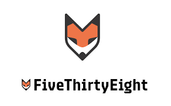

I am taking this course so that I can learn about web development and open more career doors after Davidson.
I have a fair amount of experience in programming at Davidson. I am most proficient in Python but am familiar with a few other languages. I don't have a whole lot of experience with creating content for the web in HTML but I have created a few web apps with R Shiny.
My main goal for this course is to be proficient in web development so that I can add web development as a skill on my resume.
I learned plenty of neat shortcuts that will help me work efficiently in the future. Some of the shortcuts I found particularly interesting were the how to select text and reopen a closed tab. Before learning this second shortcut, I naively thought that a tab was gone as soon as I exited out of it. As if I needed more proof of the efficiency of keyboard shortcuts, I found in the efficiency test that it takes me about half as long on average to perform a task when I’m allowed to use keyboard shortcuts. Along the way, I found that shortcuts like CMD + S are engrained in my mind that I caught myself accidentally using it when I was supposed to only use the mouse. I’m hoping some of these other shortcuts will also become second nature.
This is the website I visit most often for leisure. It seamlessly integrates sports highlights, scores, and articles to give sports fans a great experience. It is remarkable because it offers unparalleled access to sports news.
This website offers data-oriented articles about politics, sports, and science. I find it particularly appealing how they balance the images and text on their website. It is remarkable because it often highlights a new perspective using numbers.
This website contains a game which drops the player into a random spot in the world and forces them to guess their location on a map given context clues around them. The images and features of the game come from Google Earth. It is remarkable because, while providing an exciting game, it makes the world feel not quite as big.